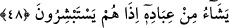

kıyâmet günü olunca Allah fakirleri ve miskinleri bir araya toplar. Onlara:
“Tanıdığınız yüzleri ayırın. Size bir lokma yediren, bir yudum su içiren, bir hırka
giydiren ve bir eksikliğinizi tamamlayan herkesin elinden tutun ve cennete girdirin.”
denir.”[46]
3- Şefaat, ilâhî yardım babındandır.
Bu âyette Hz. Peygamber (s.a.)’e sonuçta zafere ereceği ve kendisini yalanlayanlara
üstün geleceği müjdelenmekte, mü’minlere ise iyi sonucun kendilerine âid olduğu tenbih
edilmektedir. Çünkü takvâ sâhipleri olanlar onlardır. Nitekim Allah Teâlâ “İyi sonuç
takvâ sâhiplerinindir.” (el-A‘râf, 7/128) buyurmuştur.
Gayb âleminin meleği bana şu güzel müjdeyi verdi:
Kimse bu dünyâda daima mahzun kalmayacak
et-Te’vîlâtü’n-Necmiyye’de der ki: “Andolsun ki, biz senden önce kendi kavimlerine
nice peygamberler gönderdik” kavli ile, kavimleri olan müridleri terbiye etmek ve seyr
u sülûk yaptırarak onları Âlemlerin Rabbi’nin huzûruna delâlet etmek için
görevlendirilmiş daha önce gelip geçen meşâyıha işâret etmektedir “de onlara” tasdîk
ehlinin yolunu açıklama konusunda tahkîk lisanı üzere “açık deliller getirdiler.” Tasdîk
ile onlara karşılık verenler tahkîkin özüne ulaştı. Red ve inkâr ile onlardan yüz
çevirenleri ise kendinden uzaklaştırmakta ve katılıkta ebedi olarak kalma azâbıyla
mübtelâ kıldı. Nitekim âyetin devamında bu şöyle anlatılmaktadır: “(Onları
dinlemeyip) günaha dalanların” yâni inkâr edenlerin “ise cezâlarını hakkıyla
vermişizdir. Mü’minlere” bize yaklaşanlara, biz de onlara yaklaşarak “yardım etmek de
bize düşer.”
Allâh’ım! Bizi mutlak olarak yardıma mazhar olanlardan kıl. Yönelişimizi samîmî ve
gerçek olarak kapına doğru eyle. Çünkü yardım edip destekleyen kalbleri yakîn tarafına
çeviren sensin sen!
48. Allah O’dur ki, rüzgârları gönderir, bunlar da bulutu kaldırır. Derken, Allah
onu gökte dilediği gibi yayar ve parça parça eder; nihâyet arasından yağmurun
çıktığını görürsün. Allah dilediği kullarına yağmuru nasip edince, onlar
seviniverirler.
“Allah O’dur ki, rüzgârları” sabâ ve benzeri rahmet rüzgârlarını “gönderir, bunlar